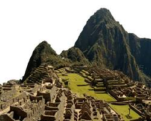

Machu Picchu: La Ciudad Sagrada de los Incas

- Ubicación: Cusco, Perú
- Civilización: Inca
- Construcción: Hacia 1450 d.C.
- Declaración UNESCO: 1983
1. Origen y Redescubrimiento
Construida a mediados del siglo XV bajo el mandato del inca Pachacútec, esta joya arquitectónica permaneció oculta para el mundo exterior tras el colapso del imperio incaico. No fue hasta 1911 cuando el explorador estadounidense Hiram Bingham la dio a conocer mundialmente, aunque los habitantes locales ya conocían de su existencia.
2. Arquitectura e Ingeniería Sobresaliente
Ubicada a 2,430 metros sobre el nivel del mar entre dos picos montañosos (Machu Picchu y Huayna Picchu), destaca por su técnica de construcción con piedra seca (ashlar), en la que enorme bloques de granito se tallaron para encajar perfectamente sin uso de mortero o argamasa. Además, cuenta con un complejo sistema de terrazas agrícolas y canales de drenaje que previenen la erosión por lluvias.
3. Significado Religioso y Urania
El sitio está dividido en áreas urbanas y agrícolas. Sus estructuras principales, como el Templo del Sol, el Intihuatana (reloj solar tallado en roca) y el Templo de las Tres Ventanas, reflejan un profundo conocimiento de la astronomía y servían como santuario religioso y residencia de descanso para la élite imperial.